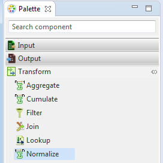
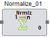

Normalize
Normalize allows the user to add, modify, and rename columns, as well as combine column data to create new fields.. It is present under the Transform category in the component palette, and contains only one input and one output port.
User is provided with options to either create a custom Java class that specifies the Normalize operation or select a pre-defined standard Operation Class.
The Normalize component can be easily distinguished in the component palette.

An enlarged version of the same is depicted when dragged on the canvas.

For further reference click on the links below: